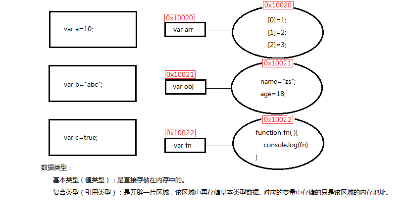
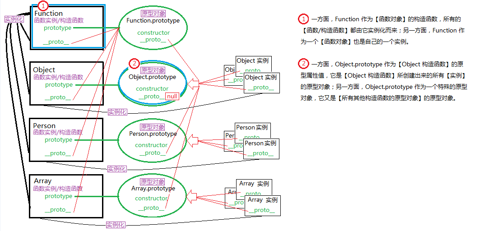
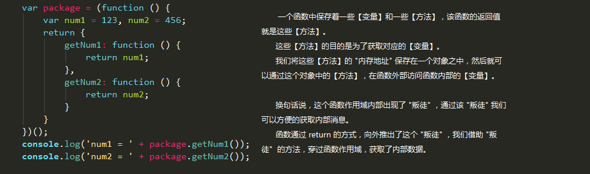

HTML-HTML5
标准通用标记语言 ( SGML , Standard Generalized Markup Language)是一种定义电子文档结构和描述其内容的国际标准语言。是所有电子文档标记语言的起源。标准通用标记语言允许用户标记电子文档的元素创建一个适当的标记方案，便于在各种印刷和电子格式的多个版本中生产。它多用于科技文献和政府办公文件中。
超文本标记语言 ( HTML , HyperText Markup Language) 是标准通用标记语言下的一个应用，也是一种规范，一种标准，它通过标记符号来标记要显示的网页中的各个部分。网页文件本身是一种文本文件，通过在文本文件中添加标记符，可以告诉浏览器如何显示其中的内容 (如：文字如何处理，画面如何安排，图片如何显示等等)。 浏览器按顺序阅读网页文件，然后根据标记符解释和显示其标记的内容。需注意的是，不同的浏览器对同一标记符可能有不完全相同的渲染结果。
万维网的核心语言、标准通用标记语言下的一个应用 超文本标记语言 ( HTML ) 的第五次重大修改 ( HTML5 )(由 W3C 和 WHATWG 合作修订)，HTML5 规范制定完成时间：2014年 10月 29日 (在此之前陆续发布过个多个版本的草案，但由于运行缓慢错漏百出，使其历经波折)
万维网联盟 ( W3C , World Wide Web Consortium) 是Web技术领域最具权威和影响力的国际中立性技术标准机构。是国际最著名的标准化组织。
网页超文本应用技术工作小组 ( WHATWG , Web Hypertext Application Technology Working Group) 是一个以推动网络HTML5标准为目的而成立的组织。在2004年，由Opera、Mozilla基金会和苹果这些浏览器厂商组成。
浏览器 ( Web browser ) 是一种可以显示（网页服务器或者文件系统）html文件内容的，并能使用户与之交互的一种软件。
服务器 ( Server ) 又称伺服器。一种能够承担并保障一些计算服务（响应服务请求并进行处理）的设备。
超文本传输协议 ( HTTP , HyperText Transfer Protocol)是互联网上应用最为广泛的一种网络协议，它是一个客户端和服务器端请求和应答的标准( TCP )
浏览器的分类
根据其内核的不同，可大致分为四类：
Webkit （Chrome,苹果Safari ...）
Gecko （Firefox ...）
Blink （Opera ...）
Trident（ie，猎豹，360 ...）
（EdgeHTML win10自带的 Microsoft Edge）
SEO（搜索引擎优化）的方式
1.花钱买排名（直接）
2.静态页面（即 html 页面）
3.外链（友情链接）
4.友好的页面（规范的html文档，合理使用语义化标签）
语义化的优势：结构清晰、更好的在移动设备展示、无障碍阅读、搜索引擎更容易查阅、便于后期开发和维护。
HTML5新增普通标签
结构标签：
header 页眉(结构块的头部，不仅仅是在整个网页的头部)
nav 导航
main 文档主要内容
article 文章
aside 旁白，在旁边
footer 页脚，底部
多媒体标签及其属性：
audio （音频）标签：
controls 播放器控制面板
autoplay 自动播放
loop 循环
video （视频）标签：
controls 播放器控制面板
autoplay 自动播放
loop 循环
width/height 设置一个后，视频会等比例缩放，同时设置两个并不会都生效
poster 让指定图片作为视频封面
source（源）标签：放在video标签中，把video的src属性放到source标签上
（把每种格式的视频地址放置在source标签中的src属性中，让浏览器自动选择支持的格式）
标签的自定义属性：
<p data-school-name="itcast">自定义属性</p>
data-开头，多个单词用“-”连接
通过js获取方式//
var p = document.querySelector("p");
var result = p.dataset["schoolName"];
//获取时，使用驼峰命名法连接。否则无法获取到值
HTML5表单元素中新增标签及属性
新增标签：
keygen 加密表单数据
例：<keygen></keygen> 写在submit前面
首先在本地生成公钥和私钥，然后通过私钥加密数据，接着把加密后的数据以及公钥通过请求报文上传到服务器。服务器通过公钥来解密数据。
output 输出一段文字
例：<output>总金额：￥100.00</output>
没有特别的含义，也不可以修改；唯一的好处是，语义性更强
datalist 为某个表单元素添加下拉选项 类似select, 在需要添加的表单元素中 list="datalist`s idname"
例：<input type="text" list="year">
<datalist id="year">
<option>1992</option>
<option>1993</option>
</datalist>
progress 进度条
<progress max="100" value="60"></progress>
meter 度量器
<meter max="100" min="0" low="40" height="90" value="30"></meter>
新增type类型：
input type="email" //【邮箱】提供了默认的电子邮箱的完整验证，如不能满足验证，会阻止表单提交
input type="tel" //【电话】并无法实现电话号码验证（全球电话号码格式不同）。但其本质目的是为了能够在移动端打开数字键盘
input type="url" //【网址】可以验证是否是合法网址（http://）
input type="number" //【数量】只能输入数字（e例外，科学记数法）
(value="60"默认值 max="100"最大值 min="0"最小值 )
input type="search" //【搜索】，可以在输入内容后提供删除按钮
input type="range" //【幅度】，类似音量选择
(value="60"默认值 max="100"最大值 min="0"最小值 )
input type="color" //【颜色选择器】提供一个颜色选择器
input type="time" //【时间选择器】提供一个时间选择器
input type="date" //【日历选择器】提供一个日历选择器
input type="datetime-loacl" //【时间和日期选择器】提供一个时间和日期选择器
input type="month" //【月份】
input type="week" //【星期】
新增属性：
<input type="text" placeholder="请输入用户名" autofocus autocomplete="on" />
placeholder 提示文本占位
autofocus 网页打开时自动获取焦点
autocomplete 自动提示
(autocomplete的两个前提：1.成功提交过；2.当前input标签有name属性)
<input type="tel" required pattern="^(\+86)?\d{10}$" />
required 当前输入框 必须输入内容，否则阻止提交
pattern 正则表达式（注意，在这里不需要写在//符号中）
<input type="file" name="photo" multiple />
multiple 可以选择多个文件
<input type="email" name="email" multiple />
multiple 可以输入多个邮箱地址，","分隔
<input type="text" name="adress" form="myForm" />
form属性，可以把没有在表单（id="myForm"）中的元素，在该表单数据提交时，一起提交。
HTML5中新增的事件
oninput 元素内容改变事件；
类似change或者onkeyup
区别在于，onkeyup是键盘弹起事件，复制粘贴不会触发
change 是改变后鼠标失去焦点时才触发，而oninput是只要改变会立即触发
oninval 验证不通过时触发
（.setCustomValidity("自定义验证不通过时提示信息")）
HTML5中的一些接口（API, Application Programing Interface）
1.网络接口
<script>
//online 网络连通事件
//offline 网络断开事件
window.addEventListener("online", function () {
alert("网络连通了");
})
window.addEventListener("offline", function () {
alert("网络断开了");
})
</script>
2.全屏接口
<script>
// requestFullScreen();//开启全屏
// cancelFullScreen(); //退出全屏
// fullScreenElement();//判断是否全屏
// 注意: 不同浏览器需要添加不同的前缀
/* chrome webkit
* firefox moz
* ie ms
* opera o
* */
//注意: 全屏是针对元素设置, 退出全屏是针对文档设置, 判断是否全屏也是针对文档判断的
</script>
3.FileReader
<script>
//reader.readAsDataURL(file[0]); //保存
//reader.onload =function(){} //监听文件保存完毕
//reader.result;//取出保存的文件
upFile.onchange = function () {
var reader = new FileReader();
//类似于构造函数模式创建一个新的实例
var file = upFile.files;//当文件上传窗口内容发生改变时,将其flies属性值取出
//注意: 由于文件上传窗口可以一次上传多个文件(multiple),所以其files属性获得的是伪数组
reader.readAsDataURL(file[0]);//因为上传窗口未添加multiple属性,故取伪数组第一项即可
//将用户上传的文件及其路径以一种 二进制编码格式 保存在reader的readAsDataURL属性中
reader.onload = function () {//因为文件解析保存需要时间，故监听其保存完毕后使用
img.src = reader.result;
//保存在对象reader.readAsDataURL中的值,通过reader.result 即可取出.
}
}
</script>
4.元素拖拽事件：
<script>
//ondragstart 拖拽开始事件
//ondragover 拖拽中事件
//ondrop 拖拽空投事件
document.ondragstart = function (event) {
var tar = event.target.id;
event.dataTransfer.setData("text/html", tar);
//将被拖拽元素的 id 以 text/html 格式保存在事件对象的dataTransfer属性中，通过setData方法
}
document.ondragover = function (event) {
event.preventDefault();
//如需成功触发ondrop事件，必须先取消浏览器默认阻止拖拽，必须在dragover中取消
}
document.ondrop = function (event) {
var tar = event.dataTransfer.getData("text/html");
//取得dataTransfer属性中保存的被拖拽元素的 id ，通过getData方法
event.target.appendChild(document.getElementById(tar));
}
</script>
5.地理定位接口：
<script>
var box = document.querySelector("#box");
function getLocation() {
if (navigator.geolocation) { //通过导航获取 地理位置信息（判断是否浏览器是否支持）
navigator.geolocation.getCurrentPosition(success, defeat, option)
//该方法会获取当前地理位置信息，由回调函数接收
/*success：获取地理位置信息成功时执行的回调函数
*defeat：获取地理位置信息失败时执行的回调函数
*option：调整获取当前地理位置信息的方式
* */
} else {
box.innerHTML = "Geolocation is not supported by this browser."
}
}
function success(position) {
position.coords.latitude; //经度
position.coords.longitude; //纬度
position.coords.accuracy; //精度
position.coords.altitude; //海拔
}
function defeat(error) {
switch (error.code) {
case error.PERMISSION_DENIED:
box.innerHTML = "User denied the request for Geolocation."
break;
case error.POSITION_UNAVAILABLE:
box.innerHTML = "Location information is unavailable."
break;
case error.TIMEOUT:
box.innerHTML = "The request to get user location timed out."
break;
case error.UNKNOWN_ERR:
box.innerHTML = "An unknown error occurred."
break;
}
}
function option(eve) {
eve.enableHighAccuracy = true; //是否使用高精度
eve.timeout = 3000; //超时时间
eve.maximumAge = 100; //浏览器重新获取地理位置信息的间隔时间
}
//注意: 实时获取到用户的经纬度即可确定用户的位置, 也可藉此利用百度地图位置接口向用户展示地理位置信息
</script>
6.页面/本地存储
<script>
//sessionStorage 【页面存储】
/* 1.数据是在页面中临时存储的，其他页面和浏览器无法访问
* 2.数据在当前页面关闭或浏览器关闭时，即时清除
* 3.sessionStorage 存储器的大小在5M左右
* */
//localStorage 【本地存储】
/*本地存储的特点：
* 1.数据是存储在浏览器中的（硬盘里）浏览器其他页面可以访问（其他浏览器无法访问）
* 2.除非手动清除，否则永久存在
* 3.localStorage 存储器的大小在20M左右
* */
sessionStorage.setItem("userName", txt.value); //设置数据
sessionStorage.getItem("userName"); //获取数据
sessionStorage.removeItem("userName"); //移除数据
localStorage.setItem("userName", txt.value); //设置数据
localStorage.getItem("userName"); //获取数据
localStorage.removeItem("userName"); //移除数据
</script>
7.应用程序缓存配置
<html lang="en" manifest="demo.appcache"><!--manifest 载货单,货单-->
<!--manifest="应用程序缓存清单文件的路径 建议文件的扩展名是appcache,这个文件的本质就是一个文本文件"-->
demo.appcache
CACHE MANIFEST
# 后面写注释,该文件告知浏览器需要缓存的文件清单列表
# 当前文档的第一句代码必须是CACHE MANIFEST关键字
#需要缓存的文件清单列表,以CACHE关键字开头
CACHE:
../images/l1.jpg
../images/l2.jpg
# *:代表所有文件
# 配置每一次都需要重新从服务器获取的文件清单列表,以NETWORK关键字开头
NETWORK:
../images/l3.jpg
# 配置如果文件无法获取则使用指定的文件进行替代,以FALLBACK关键字开头
FALLBACK:
../images/l4.jpg ../images/banner_1.jpg
# /:代表所有文件
CSS-CSS3
层叠样式表 ( CSS, Cascading StyleSheets )
CSS3 是 CSS 技术的升级版本。模块化发展是它的方向，例如：
盒子模型、列表模块、超链接方式、语言模块、背景和边框、文字特效、多栏布局等等
三层分离标准：一个完整的页面分为结构层( html )，样式层( css )，行为层( js )。
CSS的三大特性：
1.继承性：一般情况下，子元素会继承父元素的一些属性(a标签颜色/h标签大小 无法继承)
2.层叠性：一般情况下，相同样式可多次书写，后面的会覆盖前面的
3.优先级：一般情况下，冲突的属性，浏览器在解析时会判断其优先级，遵循权重及就近原则。
判断权重的方式：!important>行内>id>类>标签>通配符>继承 ( !important 属性无法被继承 )
首先需判断该选择器是否作用于目标，然后再计算其权重(0,0,0,0)，接着比较大小；括号中四位分别表示：(行内,id,类,标签) 每有一个计1,注意：并集选择器取权重大的一边
外边距（ margin ）的两个特殊现象
[塌陷现象] 大盒子包含小盒子，小盒的margin-top会使大盒子一起向下平移
解决方式：1.给大盒子设置边框；2.给大盒子设置overflow:hidden; 3.使小盒子浮动
[合并现象] 上下两个盒子,上面盒子的margin-bottom与下面盒子的margin-top,会合并后取较大的那个
解决方式：只给其中一个盒子设置较大的值即可
清除浮动的方法
float: left;左浮动/float: right;右浮动
浮动概念：浮动即漂浮，浮动盒子会脱离标准流，进入文档流；
由于浮动会打乱布局，为了使页面结构保持清晰，可以手动清除浮动带来的影响：
方法一：额外标签法
1.在父盒子后面添加一个包含clear:both属性的标签; 父盒子不会被撑开
2.在浮动盒子后面添加一个包含clear:both属性的标签; 父盒子可以被撑开
方法二：伪元素法
.clearfix::before,clearfix::after{
content:"";
display:table;
clear:both;
}
.clearfix{
zoom:1; 兼容ie6
}
在浮动盒子的父盒子中调用该类即可。
CSS3新增选择器
【属性选择器】(E:element attr:attribute)
1. E(attr) 选择指定元素标签名 且 拥有指定属性名的 元素
2. E(attr=value) 选择指定元素标签名E 且 拥有指定属性名attr 且 该属性值【是value】 的元素(严格匹配)
3. E(attr*=value) 选择指定元素标签名E 且 拥有指定属性名attr 且 该属性值【有1个或多个value】 的元素
4. E(attr^=value) 选择指定元素标签名E 且 拥有指定属性名attr 且 该属性值【以value开头】 的元素(严格匹配)
5. E(attr$=value) 选择指定元素标签名E 且 拥有指定属性名attr 且 该属性值【以value结尾】 的元素(严格匹配)
//此类型选择器中的*^$类似正则表达式中的含义, 但也有不同. 在正则中
//+表示1个或多个; *表示0个或多个; ?表示0个或1个; ^严格模式开始; $严格模式结束
【伪类选择器】
[兄弟伪类]:
.cls + E 选择拥有cls类名的元素后面的第一个相邻的兄弟元素E
.cls ~ E 选择拥有cls类名的元素后面的所有的兄弟元素E
[父元素伪类]:
E:first-child 选择E元素的父级元素中的第一个子元素 且必须是E类型元素,如果不是,无法起作用
E:last-child 选择E元素的父级元素中的最后一个子元素 且必须是E类型元素,如果不是,无法起作用
E:first-of-type 选择E元素的父级元素中的第一个E类型子元素,忽略掉其他类型元素
E:last-of-type 选择E元素的父级元素中的最后一个E类型子元素,忽略掉其他类型元素
E:nth-child(从1开始的索引 || 关键字 || 表达式:an+b)
//选择E元素的父级元素中的指定条件的子元素 ( 正序 )
E:nth-of-type(从1开始的索引 || 关键字 || 表达式:an+b)
//选择E元素的父级元素中的指定条件的E类型子元素,忽略掉其他类型元素 ( 正序 )
E:nth-last-child() 如果在nth后添加last则表示倒序
E:nth-last-of-type() 如果在nth后添加last则表示倒序
E:empty 选择E元素的父级元素中的内容为空的E类型元素(没有任何内容的,空格也没有)
E:target 当E元素被锚点选中时
【伪元素选择器】
E::before
E::after
//注意: 前后的伪元素都是添加在元素内部的!!!
//设置伪元素时,必须添加content属性,即使内容为空
//因为这两个伪元素是行内元素,所以如需设置宽高,则必须转换其显示方式
E::first-letter E元素中内容的第一个字符
E::frist-line E元素中内容的第一行
E::selection E元素中当前被选中内容的样式
边框、阴影和颜色
【边框圆角】
正方形(正圆):
border-radius: 50%;
border-radius: 10px 20px 30px 40px;(左上, 右上, 右下, 左下)
矩形(椭圆):
border-radius: 100px/50px; ("/"两边的值,分别表示xy值的距离)
border-radius: 左上x 右上x 右下x 左下x/左上y 右上y 右下y 左下y (连写方式)
如需给单独顶角设置, 可以写作:
border-top-left-radius:
border-top-right-radius:
border-bottom-left-radius:
border-bottom-right-radius:
【阴影】
[文本阴影] text-shadow: x, y, blur, color;
[边框阴影] box-shadow:h v blur spread color inset;
h: 水平方向的偏移值
v: 垂直方向的偏移值
blur: 模糊度
spread: 阴影的扩展和收缩，可选：默认0
color: 颜色，可选：默认#000
inset: 内阴影 ，可选：默认0
【颜色设置】
//红橙黄绿青蓝紫(红)(0~360)
//rgba(红, 绿, 蓝, 透明度)
//hlsa(颜色, 饱和度, 明亮度, 透明度)
hue色度:0~360(红橙黄绿青蓝紫红)
l饱和度:0%~100%(在原本的颜色中添加白色)
s明亮度:0%~100%(在原本的颜色中添加黑色)
线性和径向渐变
【线性渐变】 linear 线性的；gradient 变化率；
linear-gradient 线性渐变色，（背景颜色,但只能写在background中,不能写在其他地方）
linear-gradient(方向，起始颜色 位置，颜色2 位置，颜色3 位置...)
方向：to top(0deg),to right(90deg),to bottom(180deg),to left(270deg),0-360deg(自定义角度)
颜色 位置：blue 30%（从起始位置0%到终点位置100%，距离等分，blue颜色从30%开始渐变）
注意：除了起止颜色，其他都是可选项
repeating 重复线性渐变：background: repeating-linear-gradient();
【径向渐变】 radial 半径的,放射状的；
radial-gradient 径向渐变色，（背景颜色,但只能写在background中,不能写在其他地方）
radial-gardient(形状 大小 坐标，起始颜色 位置，颜色2 位置，颜色3 位置...)
形状：circle（圆）产生正圆的渐变；ellipse 适配当前的形状 ——默认值
大小：
closest-side 最近边；
farthest-side 最远边；
closest-corner 最近角；
farthest-side 最远角 --默认值
坐标：at x y (x横坐标，y坐标；可以写具体的数值，也可以写left/right/top/bottom/center)
默认值是：at center center
例如：
background: radial-gradient(circle farthest-side at left top, blue, red);
注意：除了起止颜色，其他都是可选项
repeating 重复径向渐变：background: repeating-radial-gradient();
背景和边框样式
【背景样式】
background-repeat: space; (可选 space/round)
(round 图片缩放平铺 间距仍为0，使边角对齐盒子边框/space 图片原样平铺间距扩大，使边角对齐盒子边框)
background-attachment: fixed;(可选 fixed/scroll/local)
fixed 图片会固定在当前位置，无论容器滚动，还是内容滚动，图片都不会动；
scroll 图片会跟随容器滚动，但不会跟随内容滚动；
local 图片既会跟随容器滚动，也会跟随内容滚动；
background-size: 300px 500px;(宽 高；也可只设置宽度,此时高度会等比例缩放)
background-size: 50% 50%;(宽比例 高比例；注意：此比例是针对容器的宽高计算的)
background-size: contain;（等比例缩放（放大），以较大值为准，容器包含图片）
background-size: cover;（等比例缩放（放大），以较小值为准，图片填满容器）
background-origin: border-box; (可选 border-box/padding-box/content-box)
设置背景坐标的原点,默认是边框左上角(border-box)
background-clip: border-box; (可选 border-box/padding-box/content-box)
设置背景的显示区域,默认是盒子内部区域(padding-box)
【边框样式】
border-image-source: url(""); 背景图片的源文件路径
border-image-slice: 30 fill;
从图片的四个边开始，向内部切30px,将图片分成9块（注意：30没有单位）;fill表示 展示中间的切片
border-image-width:
边框的图片的宽度。如果没有，默认是元素原始的边框宽度。建议与原始边框宽度保持一致
border-image-outset:
扩展边框的宽度，一般不建议设置，会影响盒子的大小，即使你设置了box-sizing:border-box;
border-image-repeat: repeat; (可选 repeat/round/stretch)
repeat; 直接将切好的图片重复平铺;
round; 将切好的图片缩放之后自适应平铺;
stretch; 将切好的图片自适应拉伸;
注意：边框图片的本质是背景，并不会影响元素内容的放置，内容只会被容器的border和padding影响。
过渡、变换和动画
【过渡效果】
transition-property: left; 添加过渡效果的样式属性名称
transition-duration: 2s; 添加过渡效果的耗时，以秒为单位
transition-timing-function: (可选 linear/ease... 过渡的方式)
linear 线性过渡
ease 平滑过渡
...
transition-delay: 1s; 添加过渡效果延迟时间
连写方式：
transition: left 2s linear 1s;
多个样式的过渡效果，可以","连接连写；
全局方式：
transition: all 2s step(4);
为所有样式的过渡效果设置时间，建议不要这么写，效率低下
（浏览器会去查找哪些属性需要过渡，再一一添加transition-property属性）
step(4) 设置过渡效果需几步完成。
【2D 变换】
transform 移动是参照原始的位置
【移动】
transform: tarnslate(x,y); 移动的x,y 轴距离；
transform: tarnslateX(); 移动的x 轴的距离；
transform: tarnslateY(); 移动的y 轴的距离；
【缩放】（1是原始大小，小于1是缩放，大于1是扩展）
transform: scale(x,y); 缩放x,y 轴的程度；
transform: scale(x); 缩放x 轴的程度；
transform: scale(y); 缩放y 轴的程度；
【旋转】
transform: rotate(角度值); 一个值，即围绕z轴，在平面上旋转
【斜切】
transform: skew(x deg,y deg); 先执行水平方向的斜切值，再执行垂直方向的斜切值
transform: skew(x deg); 只有一个值，即表示水平方向的斜切值；
tarnsform: skewX(x deg); 单独设置 水平方向的斜切值；
transform: skewY(y deg); 单独设置 垂直方向的斜切值；
【旋转轴心】
tarnsform-origin: right top; 设置旋转轴心的坐标；
【3d 变换】
transform: translate3d(x,y,z); 设置x,y,z轴的偏移值；
也可分别设置3个方向的偏移值，translateX();translateY();translateZ();
transform: scale3d(x,y,z); 设置x,y,z轴的缩放值；
也可分别设置3个方向的缩放值，scaleX();scaleY();scaleZ();
transform: rotate3d(x,y,z,deg); 设置x,y,z轴的向量值及旋转角度；
transfrom-style: preserve-3d; 保留变换后的状态；设置给父盒子！
perspective: 500px; 设置观察景深；(观察者相对目标的距离)
perspective-origin: x,y; 设置观察原点坐标；
【关键帧动画】
animation连写方式：
animation: name duration timing delay iteration;
@keyframes animateName{
0%{
...
}
50%{
...
}
100%{
...
}
}
animation-name: animateName; 指定动画的名称；
animation-duration: 2s; 指定动画的耗时；
animation-iteration-count: infinite; 设置动画播放次数，可以是具体数值，也可以是无限infinite
animation-direction: alternate; 设置为交替动画，比如摆钟；
animation-delay: 2s; 指定动画延时执行；
animation-fill-mode: forwards;(可选 forwards )设置保留动画结束时的状态；
forwards 保留动画结束时的状态；
在有延迟时，不会立刻进入动画初始状态
backwards 不保留动画结束的状态；
在有延迟时，会立刻进入动画初始状态
both 既保留动画结束时的状态，还会立刻进入动画的初始状态；
animation-timing-function: linear; 设置动画的方式，线性动画，或者steps(60);分步动画
animation-play-state: running;(running/paused) 控制动画播放和暂停
多列布局和伸缩盒子
【多列布局】
column-count: 3; 设置列数；
column-rule: dashed 2px red; 列数之间的样式，类似边框
column-gap: ;设置间隙大小；
column-width: ;
注意：column-count与column-width冲突时，取大优先,填满屏幕
column-span: ;跨列（可选 1/all）
【伸缩盒子】
display: flex;//设置父容器为伸缩盒子，会使里面的每一个子元素自动变成伸缩项
justify-content: flex-start;(设置子元素主轴方向的排列方式)
flex-start 居左 默认值
flex-end 居右
center 水平居中
space-between 空白区域平均分配至盒子中间，两边盒子贴紧父容器
space-around 空白区域平均分配至盒子两边，类似给每个子元素设置margin: 0 auto;
align-items: flex-start;(设置子元素侧轴方向的排列方式)
flex-start 居上 默认值
flex-end 局下
center 垂直居中
stretch 垂直拉伸 默认值
baseline 基线对齐
当子元素宽度之和 大于/小于 父容器宽度时，子元素默认会自动伸展/收缩，以适应父容器的宽度。
flex-flow: row wrap; (同时设置flex-direction/flex-wrap)
flex-wrap: nowrap; （可选 nowrap/wrap...）设置是否换行
nowrap 默认 不换行（元素收缩自身）
wrap 换行
flex-direction: row (可选 row/column) 设置主轴方向
row 默认 水平方向（row-reverse 水平反向排列）
column 垂直方向（column-reverse 垂直反向排列）
[ 给子元素设置在父容器中所占比例 ]：
flex: auto;（同时设置flex-grow/flex-shrink）设置一个数即可，浏览器会自动识别，或者auto
表示每个子元素获得/承担 父容器 剩余/不足 空间所占的比例
align-self: auto; (可选 auto/flex-start/flex-end/center/baseline/stretch)
设置单个元素垂直方向的对齐方式
flex-grow: 0; （默认值为0）
计算方式：（当前元素的flex-grow值）/（它所有兄弟元素(包含自身)的flex-grow值的和），
即是当前元素获得父容器剩余空间的所占比例；当前元素获得一定比例的剩余空间后会伸展自身
flex-shrink: 1; （默认值为1）
计算方式：（当前元素的flex-shrink值）/（它所有兄弟元素(包含自身)的flex-shrink值的和），
即是当前元素承担父容器不足空间的所占比例；当前元素承担一定比例的不足空间后会收缩自身
JavaScript
Ecma国际 ( European Computer Manufacturers Association ) 欧洲计算机制造商协会。
ECMAScript 是由Ecma国际通过ECMA-262标准化的脚本程序设计语言。
JavaScript 是一种解释型、直译式的脚本语言，是一种动态类型、弱类型、基于原型的语言。其解释器被称为 JavaScript引擎，该引擎为浏览器的一部分。
JavaScript 由三部分组成：
ECMAScript , 描述了该语言的语法和基本对象 ,
DOM , 文档对象模型 ,
用于描述文档对象 ( HTML ) 内部层次结构、层次关系的模型 。它包括其根节点 ( HTML ) 以及该根节点所有的后代节点。DOM是处理可置标语言的标准编程接口，它可动态的访问程序和脚本，更新其内容、结构和样式。
BOM , 浏览器对象模型 。
用于描述浏览器对象内部层次结构、层次关系的模型。它包含了其顶级对象Window，以及其他与浏览器进行交互的方法和接口。
变量的命名
规则：
1.区分大小写
2.不能是关键字或是保留字
3.由字母、数字、下划线、$ (且 开头不可以是数字)
规范：
1.名称需有实际意义，便于维护和管理
2.规则中所说字母，包含ASCII和Unicode字母字符，如汉字，但不推荐使用
3.建议遵守驼峰（camel）命名法
数据类型及其存储方式
[ 基本数据类型 ] (值类型)
number ( 数值类型 )
1. number类型数据，在进行浮点计算时会丢失精度，请勿做等值比较；
2. NaN 是数值类型数据，它不等于自身，请勿做等值比较；NaN (not a number)
3. 由于javascript语言并不偏向于计算，大量的数据计算，仍需放在后台
4. isNaN 用于判断是否是（不是一个数字），如果是数字，返回false;如果不是数字，返回true;
5. 其他类型转number类型：
Number();
parseInt(“字符串”); 取整，忽略浮点数
parseFloat(“字符串”); 取数字，包含浮点数
隐式转换：
在进行 - * / % 等计算时
string ( 字符串类型 )
1. 字符串具有不可变性；意味着字符串变量再被重新赋值时 是需要在内存中重新开辟一块空间的。
2. 正因为如此，大量的字符串拼接操作会大量消耗内存，非常不建议这样做。
3. 其他类型转string类型
String();
toString();
隐式转换：
+"";
var str = "我爱中华人民共和国";
4. 字符串包装对象的方法：
str.slice(2, 4); //从索引2开始，到索引4结束 [2,4) 包头不包尾
str.substring(2, 4); //从索引2开始，到索引4结束 [2,4) 包头不包尾
str.substr(2, 2); //从索引2开始，截取2个字符
str.indexOf("中", 1); //从索引1开始，查找字符"中"的索引，返回其索引值，如果找不到就返回-1；
str.replace(/o/g, "1"); //把字符串中所有的o 变换成1
str.split(); // 按照指定字符，将字符串分隔开来
boolean ( 布尔类型 )
1. 所有类型的数据都可以转换为布尔值
2. 空字符串 数值零 NaN undefined null 转换为boolean类型为fasle,其他所有数据皆为true;
3. 其他类型转boolean类型：
Boolean();
隐式转换：
在if()条件判断中时；
！！双取反时；
undefined
1. 它表示声明但未赋值的变量
2. 在某些情况下，如果找不到对应的值，返回undefined
null ( 空类型 )
[ 复合数据类型 ] (引用类型)
对象 ( 对象、函数、正则、日期、数组... )
不同类型数据，在内存中的存储方式：

流程控制
条件控制语句
if(条件表达式1){...}else if(条件表达式2){...}else{...};
三元表达式
a>b?console.log(a):console.log(b);
即：a大于b吗 ? 如果是输出a : 如果不是输出b。
switch(需匹配的值){
case value1:
代码...
break;
case value2:
代码...
break;
default：
代码...
}
循环语句
for(var i = 0; i < 10; i++){...}
while(条件表达式){...}
do{...}while(条件表达式)
break 跳出当前循环，执行循环后的语句
continue 跳出当前循环，继续执行循环
数组的声明及方法
数组声明的两种方式：
var arr1 = new Array(); //构造函数模式
var arr2 = []; //字面量式
//赋值，可以直接赋值，也可单独给每个索引项赋值
arr1 = [1, 2, 3, 4, 5];
arr2[0] = 1;
arr2[1] = 2;
arr2[2] = 3;
//...
[ 冒泡排序 ]
var arr3 = [12, 42, 255, 30, 5, 90, 100];
for (var i = 0; i < arr3.length; i++) {
for (var j = 0; j < arr3.length - 1; j++) {
if (arr3[i] < arr3[j]) {
var temp = arr3[i];
arr3[i] = arr3[j];
arr3[j] = temp;
}
}
}
console.log(arr3);
[ 归并排序 ]
...
数组的方法：
1. 转换数组
valueOf()
toString() 将数组转为字符串,默认只能用逗号连接
join() 将数组转为字符串,可以手动指定连接符
2. 检查数组
A instanceof B 实际是判断构造函数B的原型是否在对象A的原型链上
Array.isArray() 只用于判断是否为数组对象,ES5以上推出的方法,旧版本浏览器不适用
3. 增删方法
push() 从后面插入。返回值是新数组的长度
pop() 删除最后的元素。返回值是被删除的元素
shift() 从前面删除。返回值是被删除的元素
unshift() 从前面插入。返回值是新数组的长度
4. 翻转数组
reverse()
5. 迭代方法
filter() 迭代数组,还可以根据条件选择留下哪些元素
forEach() 迭代数组
6. 位置方法
indexOf() 从前开始查找元素第一次出现在数组中的位置
lastIndexOf() 从后开始查找元素第一次出现在数组中的位置
7. 截取方法
slice() 从一个索引开始,截取到另一个索引结束,包头不包尾,不会改变原数组
splice() 从一个索引开始,截取多少个,会改变原数组,还可以在截取的地方添加元素
8. forin方法
for(var key in obj) { "键：" + key + "值：" + obj[ key ] }
9. ES 5 数组的方法：
1）forEach 遍历
2）map 映射
3）filter 筛选
4）some 判断数组中至少一项符合要求，返回true, 否则返回false;
5）every 判断数组中所有项都符合要求，返回true, 否则返回false;
6）indexOf 在数组中查找元素，如有，返回其索引, 否则返回-1;
7）lastIndexOf 从右往左查找元素，方向与indexOf相反，功能相同;
8）substring 截取数组
函数的声明及调用
函数的两种声明方式：
1) 声明式：function fn1(){...};
2) 表达式式：var fn2 = function(){...}; (注意：此时 fn.name=""; 它是匿名函数)
函数的四种调用模式：
[函数模式]
直接调用函数，函数();
[方法模式]
对象.方法();
对象[方法]();
数组[索引]();
[构造器模式]
new 函数();
new 是一个运算符，专门用来申请创建对象。申请出来的对象，传递给构造函数的this
new 关键字相当于申请了一个空对象，类似{ };两者区别在于其原型对象不同，
new 关键字首先创建了一个空对象，然后让其后面的构造函数中的this指向这个空对象，接着依次执行构造函数中的代码。
[上下文模式]
如果某个对象需要调用一个方法，但这个对象又没有这个方法。如何不添加就调用呢？
fn.apply(null); fn.apply(null, [123, 456]); 函数模式；
或者：fn.apply(); fn.apply(, [123, 456]); 函数模式；
fn.apply(obj); fn.apply(obj, [123, 456]); 方法模式；
也可以使用.call方法。区别在于，有参数时，apply传入的是数组，call直接 "," 分隔传入参数。
bind();方法，使得函数可以与某一个对象绑定起来，那么在调用该函数时，就好像是该对象在调用方法一样。
例如：函数.bind(对象); 然后直接调用该函数即可：函数();
DOM阶段——————————————————————————————————————————
节点和元素的概念
节点（文档中所有内容都可以称为节点）
包括：标签节点，字符节点，注释节点，属性节点...
元素（文档中的标签可以称为元素）
nodeType 查看节点类型
nodeValue 查看节点的值
nodeName 查看节点名称
获取元素的方式
var box = document.getElementById("box"); //获取id 为box 的元素
var lis = box.getElementsByTagName("li"); //获取box里面的所有li标签,lis是一个伪数组,无论实际有几个li标签
var clses = box.getElementsByClassName("cls"); //获取box里面的所有类名为cls的元素
box.childNodes; //获取box里面所有的直接子节点
box.children; //获取box里面的所有直接子元素
▲ 获取 [子] 元素/节点
box.nextSibling; //获取box元素下一个兄弟节点
box.previousSibling; //获取box元素上一个兄弟节点
box.nextElementSibling; //获取box元素的下一个兄弟元素
box.previousElementSibling; //获取box元素的上一个兄弟元素
▲ 获取 [兄弟] 元素/节点
box.firstChild; //获取box元素里面的第一个子节点
box.lastChild; //获取box元素里面的最后一个子节点
box.firstElementChild; //获取box元素里面的第一个子元素
box.lastElementChild; //获取box元素里面的最后一个子元素
▲ 获取 [第一个/最后一个] 子元素/节点
box.parentNode; //获取box元素的父节点（该节点必定是元素）（既然它可以包含元素/节点，那么它一定是元素）
创建/克隆和添加/移除元素
var li = document.createElement("li"); //创建一个li标签
var smallbox = box.clone(true); //true 表示深层克隆;
//注意：这些创建或者克隆出来的元素，并无法直接在页面上显示，而只是保存在内存中。
box.appendChild(li); //将创建出来的li标签添加到box元素中
box.insertBefore(li, ul); //将创建出来的li标签添加到box元素中的 ul 的前面
box.removeChild(ul); //将box中的子节点 ul 移除；
元素属性的获取和设置
var val = box.value;
box.value = "设置value值";
[自定义属性] :
在标准中有规定的属性，js能够通过标签对象获取，也可以设置（能够映射到标签上）;
在标准中没有规定的（自定义）属性，js无法通过标签对象获取，也无法设置（无法映射到标签上）;
通过js自定义到标签对象上的属性，js可以获取可以操作，但无法映射到标签上;
例外的是：setAttribute 方法; 这个方法可以通过js把任意属性映射到标签上;
但通过 setAttribute 设置的 "自定义" 属性，只能通过 getAttribute 获取
而 getAttribute 方法可以获取任意属性;
removeAttribute 方法也可以移除任意属性;
[style属性] :
style属性，只可以获取 和 设置行内样式，写在其他地方的样式无法获取。
无论获取还是设置，都是带单位的字符串；
[操作类样式] :
设置 box.className="cls"; 注意：是设置，意味着设置后只有这一个类样式
清除 box.className=""; 注意：是清除，意味着清除后什么类样式都没有了
元素的宽高和坐标
"offset"相关属性 (注意：offset 关键字指向 [盒子]；意味着它由 content + padding + border 组成 )
offsetWidth/offsetHeight 获取的是元素客观的宽/高 (元素真实宽/高，无论写在什么地方)
offsetLeft/offsetRight 获取的是盒子(边框)与带有定位的父级(边框)之间的距离
offsetParent 获取的是距离自身最近的带有定位(非静态的)的父级元素，直至body元素
"scroll"相关属性 (注意：scroll 关键字指向 [内容]；意味着它由 content + padding 组成 被内容的大小影响)
scrollWidth/scrollHeight 获取的是元素内容的宽/高
scrollLeft/scrollTop 获取的是元素 左侧/头部 被卷去的长度
"client"相关属性 (注意：client 关键字指向 [可视区域]；意味着它由盒子的宽/高 去掉边框的宽/高即可 不被内容大小影响)
clientWidth/clientHeight 获取的是元素可视区域的宽/高
clientLeft/clientTop 获取的是元素 左侧/头部 边框的宽度(如有滚动条,也计算滚动条的宽度)
window.innerWidth/innerHeight 获取的是窗口可视区域的宽/高（也可以写作html元素/body元素的 clientWidth/clientHeight）
获取屏幕的宽高：
window.screen.width;
window.screen.height;
事件详解
追加事件的方式：//注意：这里是追加事件，所以多次追加不会相互抵消
addEventListener("click",事件处理函数名/funcion(){},false);
参数1 事件类型
参数2 事件函数
参数3 是否使用捕获 (浏览器默认以事件冒泡方式执行同名事件，
如果在捕获阶段也添加了同名事件，浏览器将按照[捕获-目标-冒泡]的"U"形顺序执行同名事件)
▲ 主流浏览器处理方式；▼ 低版本IE的处理方式：
attachEvent("onclick",事件处理函数名/function(){}) //注意：此方法事件名前需加on
移除事件的方式：
removeEventListener("click",对应的事件处理函数名);
▲ 主流浏览器处理方式；▼ 低版本IE的处理方式：
detachEvent("onclick",对应的事件处理函数名);
事件概览
鼠标事件：
click 点击
dblclick 双击
mousedown 鼠标按下
mouseup 鼠标弹起
mouseover 鼠标经过
mouseout 鼠标离开
mousemove 鼠标移动
mouseenter 鼠标进入
mouseleave 鼠标离开
键盘事件：
keydown
keyup
其他事件：
focus 获取焦点时
blur 失去焦点时
change 表单内容发生改变时
事件对象及事件坐标：
概念：我们为元素绑定的事件，是由浏览器在满足设定的条件时自动调用的；浏览器在调用该函数时，传入了一些参数
这些参数包含了本次事件触发的详细信息，它是MouseEvent.
一般情况下，我们没有在绑定的事件函数中写入形参，所以浏览器传入的实参由于没有形参接收就被忽略了，当
我们为绑定的事件函数写入形参时，我们就可以获取浏览器传入的实参MouseEvent.
MouseEvent是一个对象，它包含了该次事件触发时的详细信息，例如：坐标、目标、触发者、怎样触发的...
藉此，我们就可以获取或者以函数方式操作这些属性，以达到编程目的。
例如：
event.target 事件目标
event.type 事件触发的方式
event.pageX 事件触发时在页面中x坐标
event.pageY 事件触发时在页面中y坐标
event.screenX 事件触发时在屏幕中的x坐标
event.screenY 事件触发时在屏幕中的y坐标
event.clientX 事件触发时在可视区域的x坐标
event.clientY 事件触发时在可视区域的y坐标
...
事件冒泡：
概念：当一个元素的一个事件被触发时，它的所有层次的父级元素的同名事件会依次向上触发
例如：页面中的一个按钮被点击时，按钮被点击事件 和 页面被点击事件会顺序触发。
这原本是一种符合逻辑的方式，但在某些情况下也会出现问题。所以有时需要阻止事件冒泡
阻止事件冒泡的方法：
event.stopPropagation; //不想谁的事件向上冒泡，就在谁的身上调用该方法。
▲ 主流浏览器处理方式；▼ 低版本IE的处理方式：
event.cancelBubble = true;
正则表达式 (Regular Expression)
概念: 记录文本规则的一串代码；
用途：表单验证、高级搜索、生化科学...
预定义类：
. [^\n\r] 除了换行和回车之外的任意字符
\d [0-9] 数字字符
\D [^0-9] 非数字字符
\w [a-zA-Z0-9] 单词字符（在js中，不包含汉字）
\W [^a-zA-Z0-9] 非单词字符
\s [\f\r\n\t\v] 不可见字符
\S [^\f\r\n\t\v] 非不可见字符(即可见字符)
基础语法：
{} 里面的数字 表示前面内容出现的次数，{n}次，{n,}n到多次，{n,m}n到m次；
+ 表示前面的内容有 1 个或多个
* 表示前面的内容有 0 个或多个
? 表示前面的内容有 0 个或 1 个 3?也可以写作：(3|)
[] 表示一个字符的位置
() 用来分组 可以提高优先级
| 或运算符
/^内容/ 严格限制开头
/内容$/ 严格限制结尾
/^内容&/ 严格限制内容，不仅仅是开头和结尾！
正则对象.test(); 匹配判断
正则对象.exec(); 匹配且捕获 ，返回一个数组对象：
索引0，符合整个正则表达式的内容；
索引1，第一组，符合从左向右第一个'('中内容的。
索引2，第二组，符合从左向右第二个'('中内容的。
...
如果某个组不需要捕获，则可以在该组的'('后面的写上'?:', 即是 '(?:'
在正则表达式中 '\序号' 可以引用对应序号的组；如：/<(\w+)>.*<\/\1>/
贪婪模式：正则表达式在匹配时，默认是贪婪模式。
如，/\d+\d+\d+/ 该正则表达式未限制每个/d 匹配的最大数量，因此在执行时，会尽量多的匹配。
且三个\d+，第一个的贪婪强度最大。例如，测试 "1234567" 时，第一个\d+匹配 "12345"；
后面两个\d+匹配 "6" 和 "7" 。
取消贪婪模式：在次数限制后添加 "?" 即可。如 /\d+?\d+\d+/
此时，当第一个\d+ 取消贪婪模式后，第二个 \d+ 将变为贪婪强度最大的一个。
简单用法：
字符串.replace(字符串1, 字符串2); 将字符串中的第一个符合字符串1的内容替换成字符串2;
正则替换用法：(如需替换字符串中每个位置的0，则需要启用正则表达式的全局模式；在表达式后写 "g")
简单替换：
字符串.replace(表达式, 字符串1);
例如："a000b000c000100203".replace(/0+/g, "-");
分组替换：
"1991-1-19".replace(/(\d+)-(\d+)-(\d+)/, "$1年$2月$3日");
函数参数用法：
字符串.replace(表达式, fn); 将符合正则表达式的内容替换成函数fn的返回值。
BOM阶段——————————————————————————————————————
JavaScript顶级对象
window //是javaScript中的顶级对象
//document alert prompt confirm 都属于window对象
//一些全局作用域下的变量/函数也都属于window对象
//window 可以省略
window.onload = function () { //页面结构和外部资源全都加载完成的事件函数 }
窗口操作
var bezel = window.open("http://www.baidu.com"); //默认在新的空白窗口打开页面
window.open("http://www.baidu.com", "_self");//在当前窗口打开页面
window.open("http://www.baidu.com", "_blank");//在新的空白窗口打开页面
window.open("http://www.baidu.com", "_blank", "width=200, height=200");//设置新窗口的大小
window.close(); //关闭当前窗口
window.close(bezel); //关闭指定窗口
延时/间歇定时器
//设置：
var timer1 = setTimeout(function () {}, 2000); //延时2000毫秒，执行该函数
var timer2 = setInterval(function () {}, 1000); //每隔1000毫秒，执行一次该函数
//清除：
clearTimeout(timer1); //清除延时定时器
clearInterval(timer2); //清除间歇定时器
location
console.log(window.location.hash);//锚点
console.log(window.location.host);//主机 主机名+端口号
console.log(window.location.hostname);//主机名
console.log(window.location.pathname);//路径名
console.log(window.location.port);//端口
console.log(window.location.protocol);//协议
console.log(window.location.search);//一些参数
navigator
console.log(window.navigator.userAgent);
//可以获取客户端的一些信息，又称代理检测
//类似 系统 浏览器 ...
history
window.history.forward(); //前进
window.history.back(); //后退
screen
console.log(window.screen.width);//宽度
console.log(window.screen.height);//高度
console.log(window.screen.availWidth);//可用宽度
console.log(window.screen.availHeight);//可用高度
jQuery
jQuery 是一个快速、简洁的JavaScript框架。它的设计宗旨是 "write Less, Do More".
2006 年 1月 John Resig等人创建了jQuery.
jQuery 的核心特性可以描述为：
1. 具有独特的链式语法和短小清晰的多功能接口；
2. 具有高效灵活的css选择器，并且可对css选择器进行扩展；
3. 拥有便捷的插件扩展机制和丰富的插件。
4. 兼容各种主流浏览器，包括 IE 6.0+ , FF 1.5+ , Safari 2.0+ , Opera 9.0+ 等等。
jQuery与DOM
DOM 中的顶级对象是 document 即页面
BOM 中的顶级对象是 window 即浏览器窗口
jQuery 中的顶级对象是 jQuery或者$
这些对象都有其各自的方法，所以他们的方法不可以混用。如需使用另一种对象身上的方法，需要进行对象转换
[ DOM对象 转 jQuery对象 ]
var box = document.getElementById("box");
$(box); //转换方式
[ jQuery对象 转 DOM对象 ]
$("#box");
$("#box")[0]; /*或者*/ $("#box").get(0); //转换方式
//只有转换为相应的对象，才能使用相应对象身上的方法
[ jQuery链式编程的原理 ]
//在jQuery中，部分方法返回调用该方法的对象，所以可以继续调用其它方法。也可以手动 return this;
$("#box").siblings().end(); //end()方法可以返回上一层对象，即$("#box");
$.fn.fnName=function(){/**/};//自定义jQuery方法
var xy = $.onConflict(); //让jQuery 释放对$的控制权 并移交给xy
页面加载事件
$(window).load(function(){/*页面所有内容加载完成后执行的代码*/});
//类似于dom中的 window.onload=function(){/*页面所有内容加载完成后执行的代码*/};
//区别在于：dom中的该方法只可以出现一次，如果出现多次，后面的会覆盖前面的
//jQuery中的类似方法可以出现多次，且互不影响。
$(document).ready(function(){/*页面基本标签加载完毕即可执行*/});
//还可以写作
$(function(){/*页面基本标签加载完毕即可执行*/});
//注意：在jQuery中，$===jQuery 这两个都是jQuery的顶级对象，他们是全等的，随时可以相互替换
获取节点元素的方式
$("#box"); //id选择器
$(".cls"); //类选择器
$("li"); //标签选择器
$("#box .cls li") //后代选择器
$("#box>ul>li") //子代选择器
$("#box,.cls,ul") //并集选择器
$("li#box.cls") //交集选择器
$("#box+p") //获取box后面第一个 p 标签元素
$("#box~p") //获取box后面所有直接兄弟 p 标签元素
$("#box li:first"); //获取box中第一个li元素
$("#box li:last"); //获取box中最后一个li元素
$("#box li:even"); //获取box中的 索引为偶数的li标签
$("#box li:odd"); //获取box中的 索引为奇数的li标签
$("#box li:eq(4)"); //获取box中的 索引为 4 的li标签
$("#box li:gt(4)"); //获取box中的 索引大于 4 的li标签
$("#box li:lt(4)"); //获取box中的 索引小于 4 的li标签
$("#box").next(); //获取当前元素的下一个兄弟元素
$("#box").nextAll(); //获取当前元素后面的所有兄弟元素
$("#box").prev(); //获取当前元素的上一个兄弟元素
$("#box").prevAll(); //获取当前元素前面的所有兄弟元素
$("#box").siblings(); //获取除当前元素外，所有同级的兄弟元素
$("#box").children(); //获取box中的所有直接子元素
常见的方法
$("#box").html(); //小括号不填参数为获取，填参数为设置；类似于DOM中的 innerHTML
$("#box").text(); //小括号不填参数为获取，填参数为设置；类似于DOM中的 innerText
$("#box").val(); //小括号不填参数为获取，填参数为设置；类似于DOM中的 value
$("#box").attr(); //小括号填一个参数为获取，填两个参数为设置；类似于DOM中的 行内样式
//注意：$("#box").prop(); 可以真正获取或设置元素的选中状态，即 checked 属性 ！！！
$("#box").css(); //小括号填一个参数为获取，填两个参数为设置；类似于DOM中的 style
// 可以写作：css("width","200px"); 或者：css({"width":"200px","height":"200px"});
$("#box").empty(); //清空元素中的内容
$("#box").remove(); //移除元素自身
$("#box").index(); //获取box在其父元素中的索引值
$("#box").addClass("current"); //为box 添加指定类样式
$("#box").removeClass("current"); //为box 移除指定类样式，不填参数为移除所有类样式
$("#box").hasClass("current"); //检查元素是否应用了该类样式 返回true或者false
$("#box").toggleClass("current"); //在添加和移除类样式之间进行切换
$("#box").hide(); //隐藏(对角线动画)，小括号中可以填入参数，设置动画完成的时间
$("#box").show(); //显示(对角线动画)，小括号中可以填入参数，设置动画完成的时间
$("#box").slideDown; //滑出
$("#box").slideUp; //滑入
$("#box").slideToggle; //滑入滑出切换
$("#box").fadeIn; //淡入
$("#box").fadeOut; //淡出
$("#box").fadeToggle; //淡入淡出切换
$("#box").fadeTo(1000,0.3) //1000毫秒内，透明度达到0.3
$("#box").animate(config,time,fn) //三个参数分别是：配置单josn, 动画完成时间, 回调函数
$("#box").stop(); //停止当前正在执行的动画，一般写在annimate前面，防止动画重复
$("lis").each(function(key, value){...}); //遍历该伪数组，传入callback参数，获取并操作其键和值
创建/克隆和添加/移除元素
var li = $("<li></li>"); //即可创建li标签
var newbox = $("#box").clone(ture); //克隆元素，jQuery中默认是深层克隆，参数表示是否克隆元素身上的事件
$("#box").append(li); //把li追加到box中子元素的最后
$("#box").prepend(li); //把li插入到box的前面
$("#box").before(li); //把li作为兄弟元素添加到box的前面
$("#box").after(li); //把li作为兄弟元素追加到box的后面
li.appendTo($("#box")); //把li追加到box中子元素的最后
$("#box").remove(); //移除自身
元素的宽高和坐标
$("#box").width(); //不填参数为获取元素的宽（不含边框），填参数为设置;
$("#box").height(); //不填参数为获取元素的高（不含边框），填参数为设置;
$("#box").offset().left; //获取元素的left值，
$("#box").offset().top; //获取元素的top值，
$("#box").offset({"left":200,"top":200}); //设置元素的 left/top 值；
$("#box").scrollTop(); //获取元素卷去的上部
$("#box").scrollLeft(); //获取元素卷去的左部
事件详解
追加/解绑事件：
$("#box").bind(eventname,function(){});
$("#box").delegate(element,eventname,function(){});
$("#box").on(eventname,function(){});
$("#box").on(eventname,element,function(){});
//注意：delegate/on 可以为页面中原本不存在的元素预绑定事件函数，（通过事件冒泡的原理）
$("#box").unbind(eventname);//解绑事件
$("#box").undelegate(element,eventname);//解绑事件
$("#box").off(eventname);//解绑事件
//注意：off解绑事件时：
$("#box").off(eventname);//如果子元素是普通方式绑定的事件，那么该方式只解除父元素身上的事件;
//否则该方式将把父元素以及子元素身上的对应事件都解除;
//（虽然是为子级元素预绑定的事件，但实际还是绑定在父元素身上的）
$("#box").off(eventname,"**");//移除子级元素身上的对应事件;
$("#box").off();//移除父级和子级元素身上所有的事件;
触发事件：
$("#box").click();
$("#box").trigger("click");
$("#box").triggerHandler("click");//该方式与其他两种不同，它不会触发浏览器的默认事件；例如：a标签跳转，focus，submit ...
事件对象：
$("#box").on("click","input",function(event){
event.target;//谁触发的事件 input
event.delegateTarget;//事件是绑定在谁身上的 box
event.currentTarget;//目的是为谁（预）绑定事件 input
})
$(document).keydown(function(event){
event.keyCode;//键盘按下的键对应的键值；
})
事件冒泡：
不想谁身上的事件向上冒泡，就在谁的事件函数最后 return false;(可以取消浏览器的默认事件)
Mobile Web
环球信息网 ( World Wide Web ) , 又称 "Web" , "WWW" , "W3" , 中文名：万维网、环球网，常简称 "Web".
移动Web ( Mobile Web ) ，基于浏览器的Web服务。
屏幕适配
1.1 获取设备独立像素比例值；
console.log(window.devicePixelRatio);
1.2 获取设备物理像素；
var screenWidth = window.screen.width;
1.3 视口（Viewport）：浏览器可视窗口；
因为手机端的浏览器默认可视窗口的宽度是1024px;它远远大于手机屏幕的物理宽度；这会导致手机屏幕在显示浏览器内容时，由于无法全部展示而产生左右滚动条；
为了解决这个问题，需将网页视口宽度调整为手机屏幕物理宽度。
1.4 meta标签可以配置移动端视口，写作（快捷方式：meta:vp+"tab"）：
<meta name="viewport" content="width=device-width, user-scalable=no, initial-scale=1.0">
width=device-width; 视口宽度等于设备宽度；
user-scalable=no; 是否允许用户手动缩放（可选yes/no或者1/0）；
initial-scale=1.0; 初始缩放比例；
触摸事件
2.1 移动端【触摸】事件：
touchstart 滑动开始事件（手指接触屏幕）；
touchmove 滑动中事件（持续触发）；
touchend 滑动结束事件（手指离开屏幕）；
touchcancel 触摸意外中断事件（例如，突然来电话）；
2.2 【触摸】事件对象；
->touchstart 和 touchmove 事件
event.targetTouches[0].clientX 手指在可视区域的 x 坐标；
event.targetTouches[0].clientY 手指在可视区域的 y 坐标；
注意：targetTouches是一个伪数组，因为可能有多根手指触摸屏幕；
->touchend 事件( 由于触摸结束时，没有触摸目标，所以只能通过changedTouches来获取坐标 )
event.changedTouches[0].clientX
event.changedTouches[0].clientY
注意：尽管自始至终发生状态变化的手指只有一个，但changedTouches仍然是一个伪数组。
2.3 移动端【点击】事件；
移动端并没有定义好的点击事件；
1.对PC端的click来说，它虽然可以在移动实现点击，但因为要判断是否双击，所以有300毫秒左右的延迟。
2.对使用touch系列事件封装的点击事件来说，它会出现点透效果，很容易误操作；危害很大。
3.为解决 [延迟] 和 [点透] 两大问题，推荐使用fastclick插件。
布局方式
网页布局方式：（灵活使用、混用）
1. 固定宽度布局
2. 流式布局
3. 栅格化布局
4. 响应式布局，（通过媒体查询，判断屏幕尺寸，使用不同样式）
（缺点：内容结构简单时可以使用响应式布局；如果内容结构复杂，不推荐使用）
例如：
@media screen and (min-width: 1024px){...} /*大于等于1024px*/
@media screen and (min-width: 1366px){...} /*大于等于1366px 如果该条件满足，就会覆盖上一个*/
@media screen and (min-width: 1920px){...} /*大于等于1920px 如果该条件满足，就会覆盖上一个*/
也可以写作：
@media screen and (max-width: 1920px){...} /*小于等于1920px*/
@media screen and (max-width: 1366px){...} /*小于等于1366px 如果该条件满足，就会覆盖上一个*/
@media screen and (max-width: 1024px){...} /*小于等于1024px 如果该条件满足，就会覆盖上一个*/
长度单位em/rem
em 文本单位的长度（参照当前元素的字体大小）
rem 文本单位的长度（参照文档根元素的字体大小）
与 em 以当前元素的字体大小为标准单位不同；rem 是以当前文档的根节点 html 的字体大小为标准单位。
所以，我们可以通过媒体查询，为不同的设备匹配不同的根元素字体大小，这样我们的rem单位就可以随设备的变化而变化。
我们为元素设置的rem宽度也就可以适应设备了。
[媒体查询] 设置根元素字体大小；
@media screen and (device-width: 320px){
html{ font-size: 16px; }
}
@media screen and (device-width: 360px){
html{ font-size: 18px; }
}
@media screen and (device-width: 375px){
html{ font-size: 18.75px; }
}
... ...
Object Oriented
面向对象 ( OO , Object Oriented ) 是软件开发方法。它是把系统构造成 “现实世界” 的对象。
面向过程：侧重过程和细节。——关注并实现每一个过程和细节，以达成目的。
面向对象：通过封装好的数据方法集合（对象），直接达成目的。
JavaScript的特性
JavaScript 是一个多范式的编程语言：
面向过程的方式编程；
面向对象的方式变成；
函数式编程；（函数式的特点：递归与链式）
在JS中，万物皆对象；所以说，JS是一门基于对象的语言。
原型对象
为什么需要原型：
-> 构造器创建对象的时候, 实际上会有成员重复；
-> 解决办法就是让这个方法( 函数 )共享（1.函数写在外面；2.将所有的方法( 函数 )都绑定到一个对象中）
JavaScript原生支持解决该问题的办法：
每一个函数都有一个原型属性 prototype，它指向一个原型对象，每一个由该函数为构造器创建的实例，默认都会连接到该对象上。
这些实例可以直接调用原型对象中的方法。
藉此，我们可以将共享的方法动态添加到原型对象上；也可以直接创建一个对象，替换掉原来的原型对象，（区别，默认的原型对象
有constructor属性，替换时，需在新对象中手动添加该属性）
原型链的结构

继承和混入
传统的继承，是模板式继承。
任何实例都是继承自其原型对象的，即是原型式继承。
function __mix__ ( obj, obj1 ){
for( var key in obj1 ){
obj[ key ] = obj1[ key ];
}
}
即是，将一个对象中的属性和方法混入到另一个对象中。
属性访问原则
1）当访问对象中的某个成员时，会首先在该对象中查找，如有，使用并停止查找；
2）如果该对象中没有，会在其原型对象中查找，如有，使用并停止查找；
3）如果该对象的原型对象中也没有，则在其原型对象的原型对象中查找，如有，使用并停止查找；
4）...
n）直到查找至Object.prototype.如果其中仍没有找该成员，则返回undefined 并停止查找。
动态函数 Function
创建函数：
var fn = new Function ( "arg1", "arg2", "函数体" ); 注意，参数是字符串;函数体也是字符串;
以此来实例化一个函数；所有函数都是Function构造函数的实例；
但通常情况下，直接声明函数即可。
函数的属性：
arguments 函数调用时，传入实参的集合（伪数组）；
函数名.length 函数声明时形参的个数；
callee: 用法（arguments.callee）指向当前函数自身；
caller: 用法（当前函数.caller）指向调用发起者（当前函数的调用，是在全局上下文里哪个函数的作用域中）
eval 方法：
eval(); //该方法将字符串中的代码执行一遍。
将JSON格式字符串转换成对象，有三种做法：
eval( "(" + data + ")" ); //防止错误，
(new Function( "return" + data ))();
JSON.parse( data ); //注意：这里的data的数据格式必须是严格模式的，即键名需加上引号。
在js中 在代码块的前面写上 标记:
这表示标记该代码块；用途，可以跳出多层循环。
获取对象的类型
Object.prototype.toString.apply();
预解析和词法作用域
预解析：
每个函数都是一个单独的作用域；
代码运行时：
首先在全局作用域内预解析（变量名标记，函数名标记并指向函数体）；
然后是代码执行阶段：
执行时，如果进入每个函数作用域内部时，会再次在该区域内预解析，然后再执行；
词法作用域：
所有变量的访问规则，按照预解析的规则来访问；
按照作用域链的层级依次向上访问，以判断变量的作用范围。
1）当函数内部使用到某个标记（变量/函数）的值时，首先在该函数作用域内查找该标记，如有，使用并停止查找；
2）如果没有，向上一级作用域链中查找，如有，使用并停止查找；
3）如果没有，继续向上查找...直至全局作用域，如果仍没有，则报错；
闭包详解
有时，我们也需要外部访问某个函数作用域内部的变量；
有时，我们也需要声明一些全局变量，又不希望这些变量声明在全局作用域中，致使命名冲突。
这时，我们可以将这些变量声明在函数作用域中，然后使用一些方法，在外部访问这些变量。这就是闭包。
var package = (function(){
var num1, num2;
return{
getNum1:function(){
return num1;
},
getNum2:function(){
return num2;
},
setNum1:function(value){
num1 = value;
},
setNum2:function(value){
num2 = value;
}
}
})();
通过：package.getNum1(); 即可访问num1; package.getNum2(); 即可访问num2;
又称 “沙箱” ，如下图：

Ajax
Asynchronous JavaScript and XML(异步JavaScript和XML)
异步：两条时间线，业务同步进行；
同步：一条时间线，业务先后进行；
浏览器在访问域名时：
会首先在本地 ( C:\Windows\System32\drivers\etc\hosts ) 中查找，是否有映射IP, 如有，直接访问该IP地址
如果没有，就会到网络上的13台域名服务器上查找。
Ajax的作用：异步请求，局部刷新。
配置服务器：
基本配置：
D:\wamp\bin\apache\Apache2.4.4\conf\httpd.conf
( wamp, Windows Apache MySQL PHP) ( 现下主流配置：lnmp, Linux Nginx MySQL PHP )
Listen (58 行)设置端口;
DocumentRoot (239 行)，设置服务器默认根目录；
<Directory> (240 行)，设置地址指向目录；
Allow from all (268 行)，设置是否允许其他用户访问该服务器；
Virtual hosts (498 行)，虚拟主机配置，将下一行前面的#号去掉即可；
虚拟主机配置：
D:\wamp\bin\apache\Apache2.4.4\conf\extra\httpd-vhosts.conf
<VirtualHost *:80>
DocumentRoot "D:/ServicesRoot"
ServerName localhost
ServerAlias localhost
</VirtualHost>
</VirtualHost *:80>
DocumentRoot "e:/myweb/tom"
ServerName tom.com
ServerAlias www.tom.com
</VirtualHost>
IP映射关系配置：
C:\Windows\System32\drivers\etc\hosts
127.0.0.1 localhost
127.0.0.1 tom.com
127.0.0.1 www.tom.com
步骤：安装好 WampServer 之后，设置允许其他用户访问该服务器，基本功能即可实现。然后：
1.配置服务器根目录；
2.配置虚拟主机 ( Virtual hosts ) ：
1) 设置 <VirtualHost *:80>标签的内容，第一个该标签的目录，即是默认访问目录；
2) 设置该目录在虚拟主机中的名称；
3) 设置计算机IP映射关系；
PHP的基础语法
1.变量声明使用 “$”
如：$num = 123;
2.字符串拼接用 “.”
如：echo '<div>编号为：'.$num.'</div>'
3.单引号无法识别字符串中的变量，它会将所有内容作为字符串处理；
4.双引号可以识别字符串中的变量，它会将变量当作变量处理；
5.内容输出的三种方式：
echo output 简单数据类型
print_r(); output 复合数据类型
var_dump; output 详细信息，辅助开发
索引数组：
$arr1 = array(1, 2, 3, 4, 5);
关联数组：
$arr2 = array("name"=>"zs","age"=>"18");
访问数组：
echo $arr1[0]; echo $arr1[1];
echo $arr2[name]; echo $arr2[age];
print_r($arr1); print_r($arr2);
var_dump($arr1); vardump($arr2);
在js中，复合数据类型（引用类型）数据只有一种：
objcet ( Object Array Math Date RegExp Error Number String Boolean )
6.数组的方法：
gettype($arr); //返回变量的数据类型；
count($arr); //返回该数组的长度；
foreach($arr as $key => $value){
echo $key.'------'.$value.'
';
} //遍历该数组；
json_encode($arr); //传入数组，返回json类型字符串；
json_encode($str); //传入json类型字符串，返回数组；
7.函数：
//在php中，函数名不区分大小写, 其他基本与JS相同；
预定义变量：
$_GET['flag']; //获取url地址中传递的参数
例如：//localhost/php/page.php?flag=1
$f = $_GET['flag'];
if($f = 1){
echo '参数正确';
}else{
echo '参数错误';
}
$_POST['flag'];
原生JS的Ajax
前端 JavaScript 代码：
window.onload = function (){
// 使用Ajax发送请求的步骤：
var btn = document.querySelector("#btn");
btn.onclick = function(){
var uname = document.querySelector("#username").value;
var pw = document.querySelector("#password").value;
// 1.创建XMLHttpRequest对象
var xhr = new XMLHttpRequest();
console.log(readyState);// 0 , 对象初始化完成
// 2.准备发送
var param = 'uname='+uname+'&pw='+pw;
xhr.open("post", "./check.php?", true);
console.log(readyState);// 1 , 已经向服务器发送了请求
// 3.执行发送动作
xhr.setRequestHeader("Content-Type", "application/x-www-form-urlencoded");
xhr.send(param);
// 4.指定回调函数
xhr.onreadystatechange = function(){ //readyState 状态发生变化
console.log(xhr.readyState);
/*
2 浏览器已经收到服务器响应数据
3 正在解析该数据
4 该数据已经解析完成
*/
if(xhr.readyState == 4 ){
if(xhr.status == 200){ // 200表示数据是正常的
var data = xhr.responseText;
var info = document.querySelector("#info");
if(data == 1){
info.innerHTML="登录成功";
}else if(data == 2){
info.innerHTML="账户或密码错误";
}
}
}
}
}
}
后端 PHP 代码：
<?php
$uname = $_POST["uname"];
$pw = $_POST["pw"];
if($uname="admin" && $pw="123"){
echo 1;
}else{
echo 2;
}
?>
格式转换：
在js中：
var obj = JSON.parse(str); //将JSON格式的字符串转换成对象；
var str = JSON.stringfiy(obj); //将对象转换成JSON格式的字符串；
在php中：
var $str = json_encode($arr); //将数组转换成字符串；
jQuery的Ajax方法
前端 JavaScript 代码：
$(function(){
$("#btn").on("click", function(){
var code = $("#code").val();
jQuery.ajax({
type:"post",
//设置http协议中请求的方式（常见的有：get, post, put, delete）
url:"./code.php",
//设置后端处理的数据的程序路径
data:{"code":code},
//将前端获取的数据以固定格式("'name'='张三'&'age'='18'")传递给后端
//这里之所以写成对象的形式，是由于在jQuery.ajax方法内部，对其做了转换
dataType:"json",
//向后端约定响应过来的数据格式，以便判断使用何种方式解析数据
success:function(data){
if(data.flag == 0){
$("#info").html("未找到");
}else{
$("#info").html("书名："+data.bookname+"，作者："+data.author);
}
},
error:function(data){
$("#info").innerHTML="服务器出现错误"
}
});
});
});
后端 PHP 代码：
<?php
$code = $_POST['code'];
$books = array();
$books['sgyy'] = array('bookname'=>'三国演义','author'=>'罗贯中','desc'=>'一个杀伐纷争的年代');
$books['shz'] = array('bookname'=>'水浒传','author'=>'施耐庵','desc'=>'108条好汉的故事');
$books['xyj'] = array('bookname'=>'西游记','author'=>'吴承恩','desc'=>'佛教与道教的斗争');
$books['hlm'] = array('bookname'=>'红楼梦','author'=>'曹雪芹','desc'=>'一个封建王朝的缩影');
// 这里的array_key_exists用来判断数组中没有对应键
if(array_key_exists($code,$books) == 1){
$book = $books[$code];//这里根据参数获取一本书的信息
echo json_encode($book);
}else{
echo '{"flag":0}';
}
?>
JS代码的执行的方式
单线程+事件队列
注：ajax 本身不支持跨域；因此只能借用script标签，使其返回一个函数调用
待补充...
模板引擎
template
Canvas
Canvas HTML5给出的一个可以展示绘图内容的标签;
canvas标签的默认宽高 300*150; 建议使用html属性为其设置宽高，而不是CSS;
1.使用html属性，会更改 canvas画布的像素；
2.使用CSS属性，不会更改 canvas画布的像素，只是将画面缩放；
每个Canvas都有一套工具，利用工具就可以在当前canvas上进行绘图；使用js获取canvas画图工具：
var canvas = document.querySelector("canvas");
var tools = canvas.getContext( "2d" );
tools 即是canvas画布的工具集；
简单的线与形状
1. 画线：
tools.moveTo(x1, y1); //将画笔挪至点1
tools.lineTo(x2, y2); //画线至点2
tools.lineTo(x3, y3); //画线至点3
tools.strokeStyle = 'orange'; //设置描线的颜色
tools.lineWidth = number; //设置线宽
tools.lineCap = butt; //设置线末端样式：butt(方形，默认)/round(圆角)/square(突出圆角)
tools.lineJoin = value; //设置相交线拐点：miter(直角，默认)/bevel(平切)/round(圆角)
tools.stroke(); //将画好的线用颜料描绘出来 (默认黑色)
2. 画图形：
tools.beginPath(); //开始一段新的路径 ( 抬起画笔 )
tools.moveTo(x1, y1);
tools.lineTo(x2, y2);
tools.lineTo(x3, y3);
tools.closePath(); //闭合路径，即将图形闭合
tools.fillStyle = 'orange'; //设置填充的颜色
tools.fill(); //填充图形(默认有闭合功能)
3. 画矩形：
方式一 ( 画一个矩形，需手动描边或填充 )
tools.beginPath();
tools.rect(x, y, width, height); //x, y 矩形左上角在画布上的坐标，width,height矩形的宽高
tools.stroke();
tools.fill();
方式二 ( 画一个描边矩形 )
tools.beginPath();
tools.strokeRect(x, y, width, height);
方式三 ( 画一个填充矩形 )
tools.beginPath();
tools.fillRect(x, y, width, height);
注：清除矩形区域方法 ( 亦可清除画布 )
tools.clearRect(x, y, width, height);
//清除画布方式
1) tools.clearRect(0, 0, cas.width, cas.height);
2) cas.width = cas.width;
4. 虚线：
tools.beginPath();
tools.moveTo(x, y);
tools.lineTo(x1, y1);
tools.setLineDash( [1,5,10] );
// 设置虚线时，传入一个数组，循环数组中的每一项为线设置 实线,空白,实线,空白...
tools.stroke();
统计图形
5. 坐标网格：
var x = 0;
var y = 0;
var step = 20;
while(y < cas.height){
tools.beginPath();
tools.moveTo(0, y += step);
tools.lineTo(cas.width, y);
tools.stroke();
};
while(x < cas.width){
tools.beginPath();
tools.moveTo(x += step, 0)
tools.lineTo(x, cas.height)
tools.stroke();
};
6. 折线图：
var cas = document.querySelector("#cas");
var tools = cas.getContext("2d");
var padding = 100;
(function(window){
var line = {
// 画线方法
string: function(a, b, c, d, width, color){
tools.beginPath();
tools.moveTo(a, b);
tools.lineTo(c, d);
if(width){
tools.lineWidth = width;
}
if(color){
tools.strokeStyle = color;
}
tools.stroke();
},
// 描点方法
point : function (xx, yy, ww){ //横坐标占横轴比例，竖坐标占竖轴比例，点的大小
if(ww){
ww = ww;
}else{
ww = 8;
}
var x = xx + padding;
var y = cas.height - (yy + padding);
tools.beginPath();
tools.moveTo(x-ww/2, y-ww/2);
tools.lineTo(x+ww/2, y-ww/2);
tools.lineTo(x+ww/2, y+ww/2);
tools.lineTo(x-ww/2, y+ww/2);
tools.fillStyle = 'red';
tools.fill();
return {"x":x, "y":y};
},
// 连线方法
pointLine : function(p1, p2){
line.string(p1.x, p1.y, p2.x, p2.y, 2, "red");
}
}
window.line = line;
})(window);
// 坐标横轴
line.string(padding, cas.height-padding, cas.width-padding, cas.height-padding);
// 坐标纵轴
line.string(padding, cas.height-padding, padding, padding);
// 横轴箭头
line.string(cas.width-padding, cas.height-padding, cas.width-padding-20, cas.height-padding-5);
line.string(cas.width-padding, cas.height-padding, cas.width-padding-20, cas.height-padding+5);
// 纵轴箭头
line.string(padding, padding, padding-5, padding+20);
line.string(padding, padding, padding+5, padding+20);
// 坐标轴上的点
//点: ( 100, 200 ), ( 150, 130 ), ( 170, 300 ), ( 300, 100 ), ( 200, 150 )
var p1 = line.point(100, 200);
var p2 = line.point(150, 130);
var p3 = line.point(170, 300);
var p4 = line.point(300, 100);
var p5 = line.point(200, 150);
// 点之间的线
line.pointLine(p1, p2);
line.pointLine(p2, p3);
line.pointLine(p3, p4);
line.pointLine(p4, p5);
7. 画弧形 ( 扇形，圆形 )
// 【弧形】
// 注：圆周长为 2π, 在js中表示为 2*Math.PI, 在canvas中，弧度制自水平朝右方向开始为 0, 顺时针增加
tools.arc(x, y, r, h1, h2);
// 参数：x,y 为圆心点坐标, r 为半径, h1 为起始弧度, h2 为结束弧度。
tools.stroke();
// 【扇形】
// 注：弧形描点默认从起始弧度坐标开始，如手动将画笔移动至圆心，则从圆心开始描点
tools.moveTo(200, 200);
tools.arc(200, 200, 200, -Math.PI/2, 0);
tools.closePath(); //当描点至结束弧度时，手动闭合路径，即可为扇形
tools.stroke();
// 【圆形】
// 注：绘制完整弧度的弧形，即为圆形
tools.arc(200, 200, 200, 0, 2*Math.PI);
tools.stroke();
tools.fill();
// 【相切线】(圆角)
tools.beginPath();
tools.moveTo( x0, y0 );
tools.arcTo( x1, y1, x2, y2, len );
// 参数：x0,y0 起始点坐标，x1,y1 两条直线的延长线交点坐标，x2,y2 终止点坐标，len 相切开始时距离交点的长度
tools.stroke();
8. 写文字：
// 空心文本
tools.strokeText("文本内容", x, y);
// 实心文本
tools.fillText("文本内容", x, y);
// 设置文本样式
tools.font = "50px 黑体"
// 设置文本左右对齐方式
tools.textAlign = "center" (可选，center,left,right...)
// 设置文本垂直对齐方式
tools.textBaseline = "middle" (可选，middle,top,buttom...)
图片与动画
9. 添加图片：
var img = new Image();
img.src = "./abc.png"
// 自画布x,y位置开始绘制图片
tools.drawImage(img, x, y);
// 自画布x,y位置开始，绘制宽为w, 高为h 的矩形区域(图片将被压缩在指定范围显示)
tools.drawImage(img, x, y, w, h);
// 自画布x,y位置开始，绘制宽慰w, 高位h 的矩形区域，
// 该图片来自img(原图片)中的x1,y1坐标开始，宽为w1, 高为h1的矩形区域
tools.drawImage(img, x, y, w, h, x1, y1, w1, h1);
10. 绘制动画 ( 平移、缩放、旋转变换 )
window.onload = function(){
var cas = document.querySelector("#cas");
var tools = cas.getContext("2d");
var img = new Image();
img.src = "./images/ban.png";
img.onload = function(){
var width = img.width/4,
height = img.height/4;
var i = 0,
j = 0,
m = 0,
n = 0,
step = 10;
setInterval(function(){
tools.translate(m, n);
tools.clearRect(0, 0, 2*img.width, 2*img.height);
tools.drawImage( img, i*width, j*height, width, height, 100, 100, 2*width, 2*height);
i++;
if (i==4) {
i = 0;
}
},200);
document.addEventListener("keyup", function(event){
if(event.keyCode == 38){
j = 3; m = 0; n = -step;
}else if(event.keyCode == 40){
j = 0; m = 0; n = step;
}else if(event.keyCode == 37){
j = 1; m = -step; n = 0;
}else if(event.keyCode == 39){
j = 2; m = step; n = 0;
}
});
}
}
状态保存
11. 状态保存：
// 保存之前的状态
tools.save();
// 取出上一次保存的状态
tools.restore();
// 注：通常我们在开始绘制之前，先保存画布的原始状态，然后开始绘制，绘制结束之后，再将原始状态取出
//如此循环往复，即可创建一个不受上下文干扰的环境。
画布保存
12. 画布保存：
var img = document.getElementById( 'img' );
var cas = document.createElement( 'canvas' );
cas.width = 100, cas.height = 100;
var ctx = cas.getContext( '2d' );
ctx.fillStyle = 'pink';
ctx.fillRect( 0, 0, 100, 100 );
// 将其保存为 base64 编码的字符串.
var data = cas.toDataURL( 'image/png', 1 );
// 可以设置给img标签
img.src = data;
基于canvas的图表库
KonvaJS -------------------------
引入 konva.js 文件
var stage = new Konva.Stage({ //创建一个舞台
width: 600,
height: 400,
container: "box"
});
var layer = new Konva.Layer(); //创建一个层
var rect = new Konva.Rect(); //创建一个图形
layer.add(rect); //将图形放入层；
stage.add(layer); //将层放入舞台；
Echarts --------------------------
引入 echarts.js 文件
//创建一个实例
var myChart = echarts.init(document.getElementById('main'));
//创建一个对象
var option = {
//...
}
//将对象放入实例
myChart.setOption(option);
Library
重写jQuery库的意义：熟悉面向对象的编程思想
框架与库的区别
库：为了实现特殊功能而封装的, 便于使用和开发的函数、对象和常量等。
框架：一套完整的开发解决方案。开发者按照方法使用即可, 无需关注它的具体实现。
jQuery库的核心结构
(1) 核心包
(function(window){
// 1. 把沙箱中声明的函数 jQuery 赋值给window的jQuery属性(和$属性)，使其暴露在全局作用下
window.jQuery = window.$ = jQuery;
/* 2. 声明一个jQuery函数 ，这个函数 返回 的是其 prototype 对象中的一个方法(构造函数) init 的实例
我们将这个构造函数单独写在一个包中，并在最后引入。(目的：方便我们在扩展其它包时，随时修改这个构造函数
创建实例的方式(代码执行路径/判断方式)，同时也便于将完整版的 jQuery.prototype (加上其他扩展包扩展的方法)
赋值给这个构造函数的prototype.从而让jQuery函数返回的init实例，可以访问jQuery.prototype中的所有方法)*/
function jQuery(sele){
return new jQuery.fn.init(sele);
}
// 3. 设置jQuery函数的 prototype 的值，并将其重命名为 fn.
// 同时，我们为其添加一些在众多地方都会用到的 核心方法
jQuery.fn = jQuery.prototype = {
constructor: jQuery,
length: 0,
each: function(){
//遍历
},
map: function(){
//映射
},
pushStack: function(){
},
end: function(){
}
}
// 4. 为jQuery 函数对象添加一些静态方法，使我们可以在全局作用域下通过其属性 直接 调用这些方法
jQuery.isArrayLike = function(){
//是否类似数组
}
jQuery.each = function(){
//遍历
}
jQuery.map = function(){
//映射
}
// 5. 我们为jQuery 函数对象自身以及其原型属性fn对象添加一个特殊的方法，使其可以方便的混入其他对象的方法
jQuery.extend = jQuery.fn.extend = function(obj){
for(var key in obj){
this[key] = obj[key];
}
}
})(window);
// 总结：创建jQuery库 的核心包代码共分 5 步：
// 1. 将jQuery暴露在全局作用域
// 2. 声明jQuery函数，返回构造函数实例
// 3. 为jQuery函数的原型属性添加核心属性和方法
// 4. 为jQuery函数对象添加常用静态方法
// 5. 为jQuery函数及其原型属性添加扩展方法
(2)构造器包
(function(window){
// 1. 在沙箱中声明一个变量jQuery, 接收来自全局作用域下的jQuery对象
var jQuery = window.jQuery;
// 2. 为jQuery函数对象的prototype 对象中添加构造函数 init.
jQuery.fn.init = function(sele){
//构造函数
}
/* 3. 将jQuery函数对象的prototype 对象赋值给新写入的构造函数 init 的prototype对象
这样使得由该构造函数创建出来的实例都可以访问到jQuery.prototype中的所有方法*/
jQuery.fn.init.prototype = jQuery.fn;
})(window);
// 总结：创建jQuery构造器包代码共分 3 步
// 1. 声明变量jQuery，接收来自全局作用域的jQuery对象
// 2. 给jQuery对象的prototype写入构造器
// 3. 把jQuery对象的prototype赋值给构造器的prototype
简单的jQuery库实现
源代码及完整版本 核心包 构造器包 DOM包 样式包 事件包 属性包 ( 普通版 ) 完整带注释 完整压缩版 (1)核心包 (function (window) { // 1. 把沙箱中声明的函数 jQuery 赋值给window的jQuery属性(和$属性)，使其暴露在全局作用下 window.jQuery = window.$ = jQuery; /* 2. 声明一个jQuery函数 ，这个函数 返回 的是其 prototype 对象中的一个方法(构造函数) init 的实例 我们将这个构造函数单独写在一个包中，并在最后引入。(目的：方便我们在扩展其它包时，随时修改这个构造 函数创建实例的方式(代码执行路径/判断方式)，同时也便于将完整版的 jQuery.prototype (加上其他扩展包 扩展的方法)赋值给这个构造函数的prototype.从而让jQuery函数返回的init实例，可以访问jQuery.prototype中的所有方法)*/ function jQuery(sele) { return new jQuery.fn.init(sele); } // 3. 设置jQuery函数的 prototype 的值，并将其重命名为 fn. // 同时，我们为其添加一些在众多地方都会用到的 核心方法 jQuery.fn = jQuery.prototype = { constructor: jQuery, length: 0, each: function (callback) { return jQuery.each(this, callback); }, map: function (callback) { return jQuery.map(this, callback); }, // 把 this 堆叠到 obj 中, 方便end 取出 pushStack: function (obj) { obj.prvEle = this; return obj; }, end: function () { return this.prvEle || jQuery(this); } } // 4. 为jQuery 函数对象添加一些静态方法，使我们可以在全局作用域下通过其属性 直接 调用这些方法 jQuery.isArrayLike = function (obj) { var length = obj && obj.length; return typeof length == "number" && length >= 0; // a && b 的写法，可以简单理解为： /* 真 真 b 真 假 b 假 真 a 假 假 a 从左向右，如果哪一项首先为假，就返回哪一项 否则，返回最后一项 */ // a || b 的写法，可以简单理解为： /* 真 真 a 真 假 a 假 真 b 假 假 b 从左向右，如果哪一项首先为真，就返回哪一项 否则，返回最后一项 */ } jQuery.each = function (psary, callback) { if (callback != undefined) { if (jQuery.isArrayLike(psary)) { for (var i = 0; i < psary.length; i++) { // 如果这个回调函数的返回值是false ，则停止循环； if (callback.call(psary[i], psary[i], i) == false) break; } } else { for (var k in psary) { if (callback.call(psary[k], psary[k], k) == false) break; } } } //你传入了一个数组，在each中进行了遍历操作，然后我再将这个 数组 返回出去，以便你进行其他操作 return psary; } jQuery.map = function (psary, callback) { var temp = []; jQuery.each(psary, function(v, i){ if(v != undefined){ temp.push(callback(v, i)); } }) return temp; } // 5. 我们为jQuery 函数对象自身以及其原型属性fn对象添加一个特殊的方法，使其可以方便的混入其他对象的方法 jQuery.extend = jQuery.fn.extend = function (obj) { for (var key in obj) { this[ key ] = obj[ key ]; } } })(window); // 当前包提供each map 静态和原型方法；以及原型end方法； (2)构造器包 (function (window) { // 1. 在沙箱中声明一个变量jQuery, 接收来自全局作用域下的jQuery对象 var jQuery = window.jQuery; var arr = []; var push = arr.push; // 2. 为jQuery函数对象的prototype 对象中添加构造函数 init. jQuery.fn.init = function (sele) { if (!sele) { return this;//虽然构造函数中的return this,并没有任何用处,但是在这里使用,可以终止函数继续执行 } else if (typeof sele == "string") { if (sele.charAt(0) == "<" && sele.charAt(sele.length - 1) == ">") { push.apply(this, jQuery.parseHTML(sele)); return this; } else { var dom = document.querySelectorAll(sele); if (dom.length != 0) { push.apply(this, dom); }else{ console.log("cannot find this element!"); } return this; } } else if (sele.nodeType || sele.constructor == NodeList || sele.constructor == HTMLCollection || sele.constructor == Array) { if (sele.nodeType) { push.call(this, sele); } else { push.apply(this, sele); } return this; } else if (sele.constructor == jQuery) { push.apply(this, sele); return this; } else if (typeof sele == "function") { window.addEventListener("load", sele); } else { this[0] = sele; return this; } } /* 3. 将jQuery函数对象的prototype 对象赋值给新写入的构造函数 init 的prototype对象 这样使得由该构造函数创建出来的实例都可以访问到jQuery.prototype中的所有方法*/ jQuery.fn.init.prototype = jQuery.fn; })(window);
小姐姐的创意
源代码及完整版本 核心包 DOM包 样式包 事件包 属性包 ( 小姐姐版 ) 完整带注释 完整压缩版 (1)核心包 (function (window) { // 直接将函数 jQuery 暴露在全局作用域 window.jQuery = window.$ = jQuery; var arr = []; var push = arr.push; // jQeury 是一个无需写 new 关键字的构造函数 function jQuery(sele) { if (this instanceof jQuery) { if (!sele) { return this; } else if (typeof sele == "string") { if (sele.charAt(0) == "<" && sele.charAt(sele.length - 1) == ">") { push.apply(this, jQuery.parseHTML(sele)); return this; } else { var dom = document.querySelectorAll(sele); if (dom.length != 0) { push.apply(this, dom); } else { console.log("cannot find this element!"); } return this; } } else if (sele.nodeType || sele.constructor == NodeList || sele.constructor == HTMLCollection || sele.constructor == Array) { if (sele.nodeType) { push.call(this, sele); } else { push.apply(this, sele); } return this; } else if (sele.constructor == jQuery) { push.apply(this, sele); return this; } else if (typeof sele == "function") { window.addEventListener("load", sele); } else { this[0] = sele; return this; } } else { return new jQuery(sele); } } // 设置 jQuery 函数的原型属性为一个对象 (具备伪数组的length属性)，并为其添加一些原型方法 jQuery.fn = jQuery.prototype = { constructor: jQuery, length: 0, each: function (callback) { return jQuery.each(this, callback); }, map: function (callback) { return jQuery.map(this, callback); }, pushStack: function (obj) { obj.prvEle = this; return obj; }, end: function () { return this.prvEle || jQuery(this); } } // 为 jQuery 函数对象添加一些静态方法，使我们可以在全局作用域下通过其属性 直接 调用这些方法 jQuery.isArrayLike = function (obj) { var length = obj && obj.length; return typeof length == "number" && length >= 0; } jQuery.each = function (psary, callback) { if (callback != undefined) { if (jQuery.isArrayLike(psary)) { for (var i = 0; i < psary.length; i++) { if (callback.call(psary[i], psary[i], i) == false) break; } } else { for (var k in psary) { if (callback.call(psary[k], psary[k], k) == false) break; } } } return psary; } jQuery.map = function (psary, callback) { var temp = []; jQuery.each(psary, function (v, i) { if (v != undefined) { temp.push(callback(v, i)); } }) return temp; } // 为jQuery 函数对象自身以及其原型属性fn对象添加一个扩展其他功能包的方法 jQuery.extend = jQuery.fn.extend = function (obj) { for (var key in obj) { this[key] = obj[key]; } } })(window);